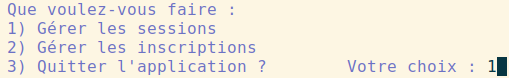
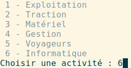
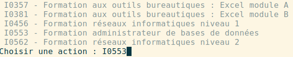
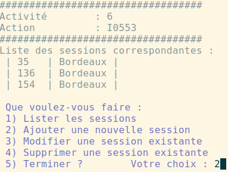

PyFormation
Cette situation professionnelle prend place dans le contexte Formation SNCF.
L’organisation concernée par cette étude, la SNCF a une mission de service public de transport que chacun a, un jour ou l’autre, utilisé et apprécié. Au-delà du transport des passagers et des marchandises, la SNCF gère en interne plus de 450 métiers qui concourent à sa bonne marche.

L'application pyFormation dispose d'une documentation technique qui a été générée avec Sphinx, elle est accessible en ligne (via les pages de framagit et l'intégration continue).
L'objectif de l'activité est d'à partir de l’observation des programmes de l’application en ligne de commandes, pyFormation :
Observer les insuffisances dans le contrôle de validité des informations saisies Proposer des solutions pour garantir la concordance des informations saisies via le gestionnaire de tickets de la forge logicielle *Compléter ou créer une procédure de façon à prendre en charge ces nouveaux besoins, puis intégrer la modification à la gestion de version du projet
écran activité

écran action de formation

écran sessions

Cette activité s’inscrit dans les ateliers de professionnalisation (AP) du second semestre en spécialité SLAM (Solutions Logicielles et Applications Métiers).
Cette situation professionnelle nous place en situation d’acteurs au sein d’un processus de support. Ils doivent mettre en œuvre les notions acquises au premier semestre, afin d’identifier des problèmes (incidents) et de proposer des pistes d’amélioration du service rendu.